2023 Q2 – Ongoing · Major rebuild in 2026
Grassland Gunner
Grassland Gunner began as my first solo game project in 2023. In 2026 I returned to it and rebuilt it into a much larger SFML/C++ action shooter with persistent profiles, class progression, weapon trees, perk variants, local co-op, improved UI flow and a custom dynamic soundscape system.
Project overview
The original version of Grassland Gunner was a small wave-survival shooter and my first complete solo game. The current version is still recognisably the same project, but the scope has expanded heavily. It now functions more like a progression-focused action game with character specialisation, weapon builds, run structure, profile data and co-op support.
I implemented the project in C++ using SFML. External art and music assets are used, but the game systems, progression logic, UI flow, audio management, local co-op support and gameplay implementation are my own work.
2026 rebuild features
- Profile system: added multiple player profiles with unlock progress, profile selection and profile deletion.
- Menu flow: rebuilt the main menu, play menu, profile screens, settings and run-over flow.
- Specialist class tree: added a class-selection tree with unlockable specialist paths and variant selection.
- Weapon progression trees: added ranged and melee weapon trees with tiered unlocks, selected weapon stats and weapon-specific upgrade information.
- Perk system: added hidden perk choices, unlock requirements and regular/pro/elite variants.
- Run structure: added restart, new run, save run and end-run flows to support repeatable progression.
- Combat readability: improved health bars, ammo display, weapon XP, round display, crosshair feedback and player-facing HUD information.
- Local co-op: added two-player local co-op support with separate HUD information and split-screen presentation.
- Pause/settings menu: added in-run pause controls, volume sliders and category-level audio toggles.
- Dynamic soundscape: implemented a sound-management layer that prioritises and culls sounds instead of playing every requested sound at once.
Dynamic soundscape management
One of the most significant 2026 additions was a custom soundscape-management system for an audio programming challenge. The brief required a game with more than 100 possible sound-emitting entities of varying importance, with runtime culling and mix control so the most important sounds remained audible.
The project separates gameplay events from final audio playback. Gameplay systems request sounds, then the SoundscapeManager decides whether each sound should play, be replaced, or be culled. The system uses a fixed voice limit, priority ordering, category volumes, panning, attenuation and runtime controls to keep the mix readable under stress.
- Voice limit: a 32-voice cap prevents the game from trying to play every sound at once.
- Priority order: gunfire is highest priority, followed by footsteps, enemy death sounds and lower-priority enemy noise.
- Replacement logic: if all voices are busy, a higher-priority new sound can replace a lower-priority active sound.
- Category control: music, player SFX, enemy SFX and weapon SFX can be independently adjusted or muted.
- Reactive audio: reload pitch is tied to reload duration, and footstep timing responds to movement speed.
Why this update strengthens the project
The 2023 version showed that I could complete a simple solo game. The 2026 rebuild shows a much stronger level of engineering and design maturity: persistent data, scalable menus, build trees, local multiplayer, audio prioritisation and more deliberate player feedback systems. It is now a better portfolio piece because it demonstrates how the same project evolved as my programming ability improved.
Video demonstration
This video demonstrates the audio-programming version of the project and the dynamic soundscape systems added during the 2026 rebuild.
2026 rebuild gallery
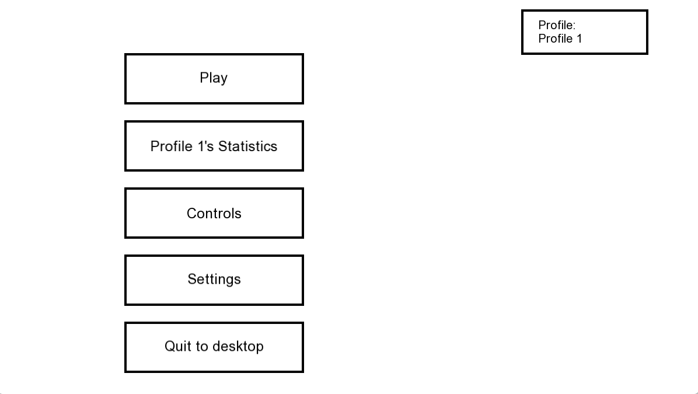
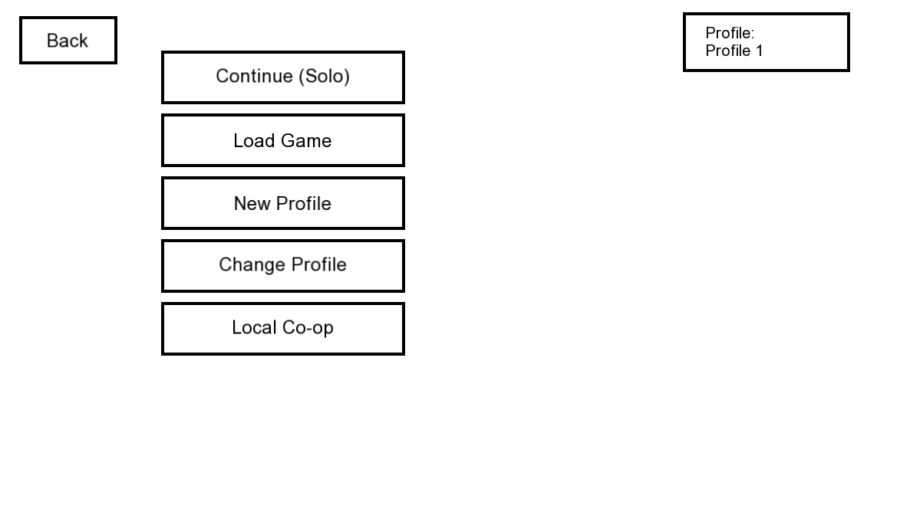
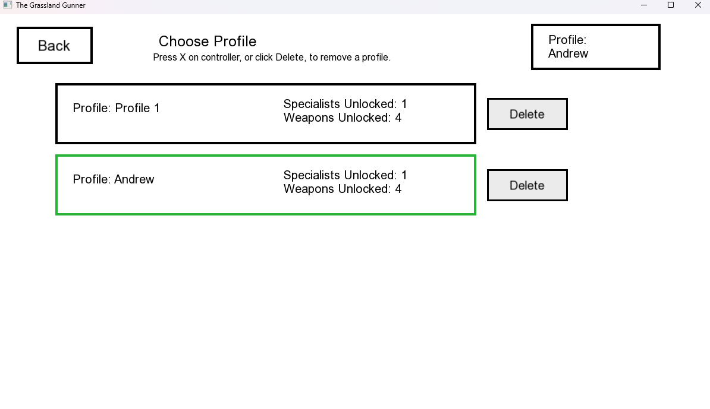
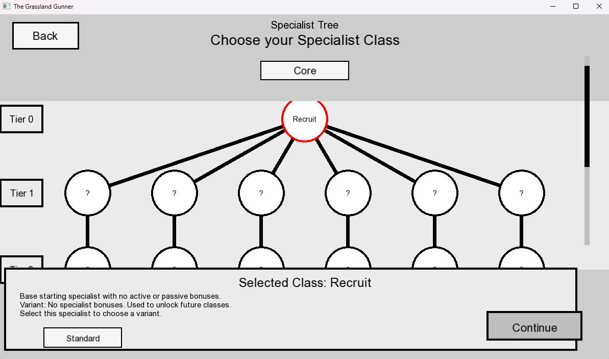
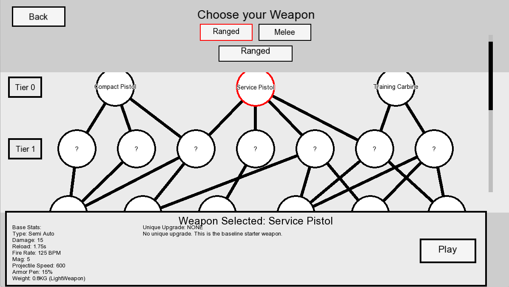
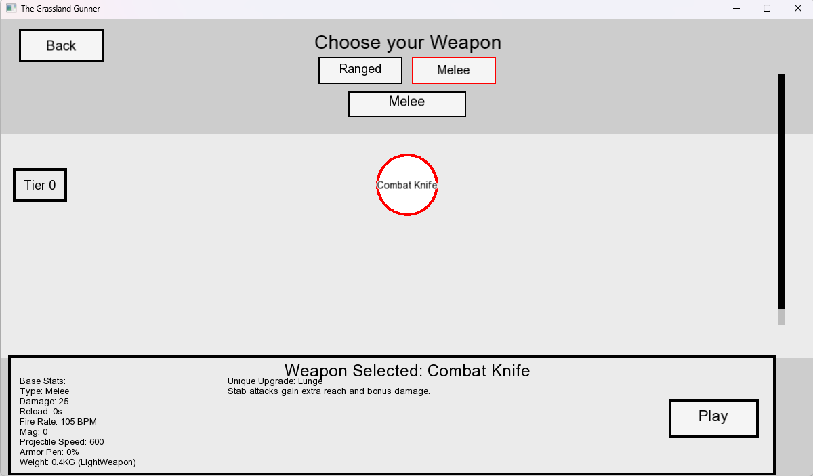
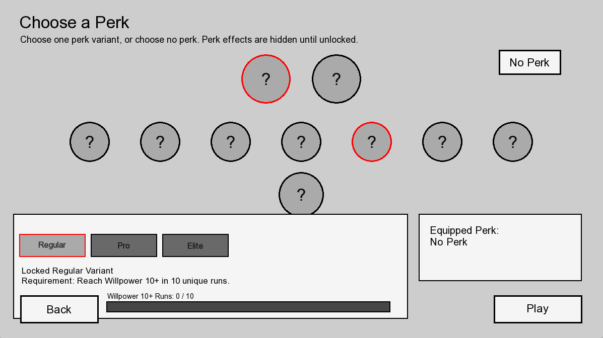
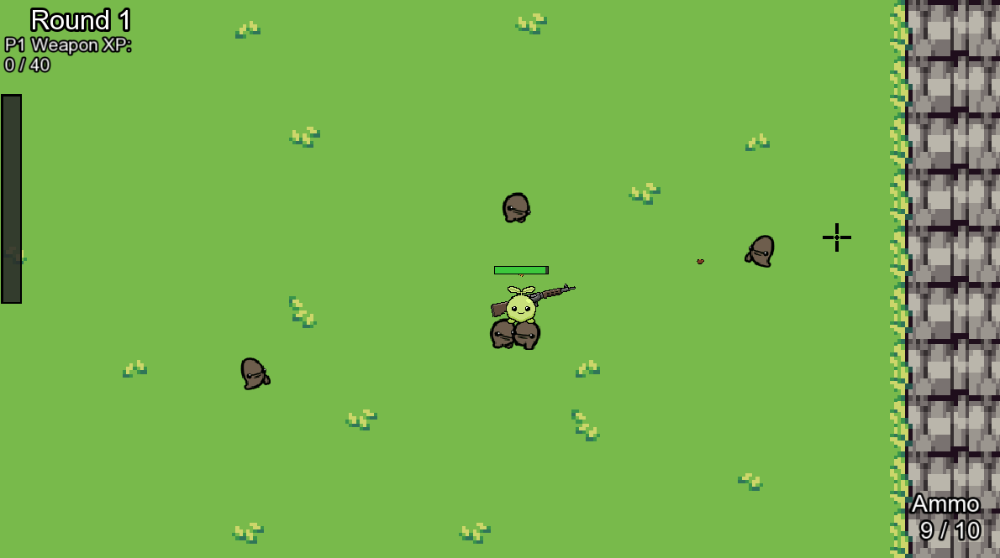
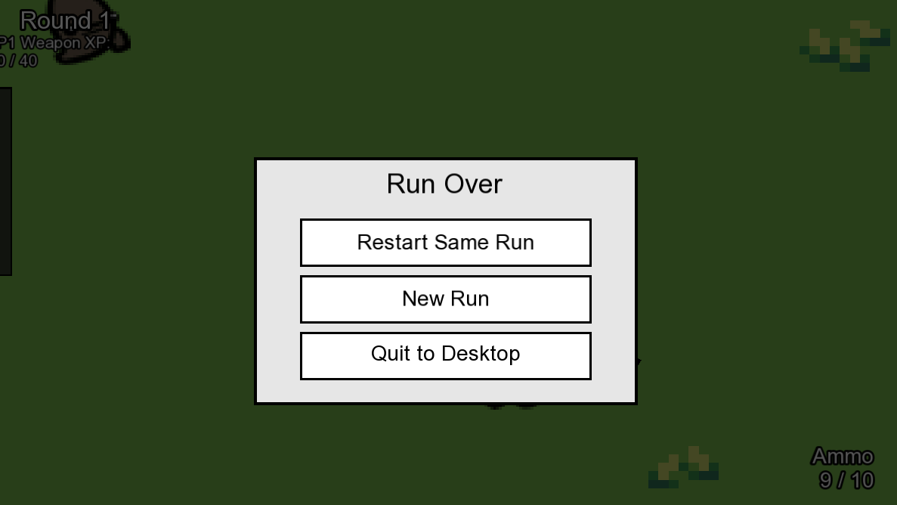
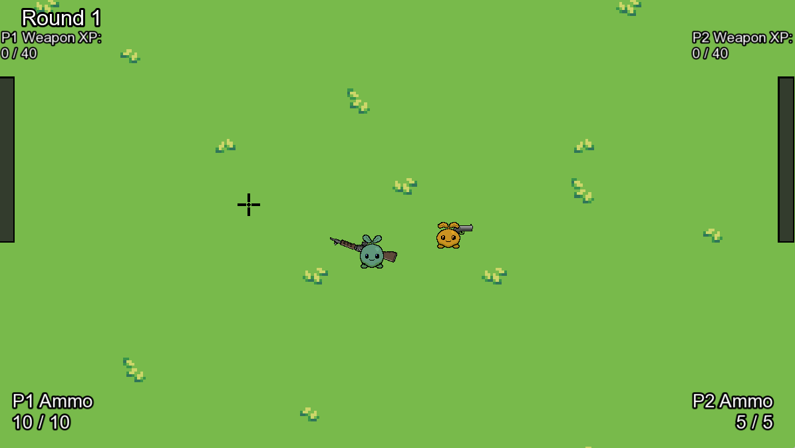
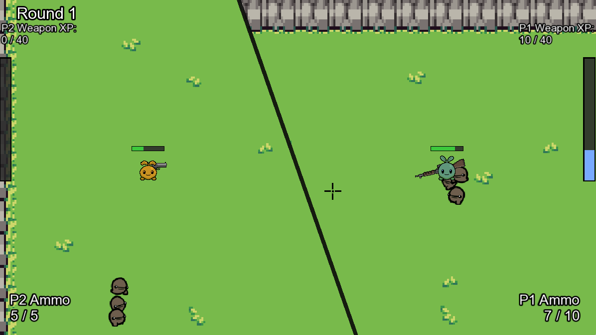
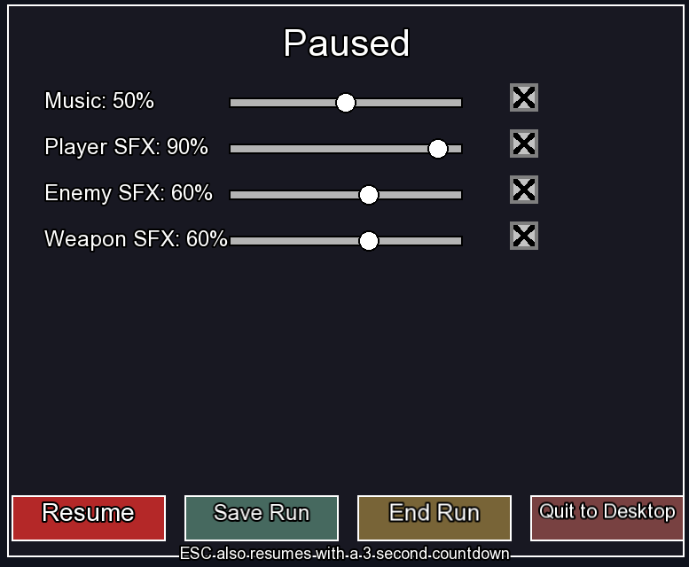
Original 2023 version
The original Grassland Gunner was my first solo project. It established the basic top-down shooter loop, round-based progression and upgrade flow. One feature I was particularly proud of was the music progression: as rounds increased, the music became faster and later introduced vocals.

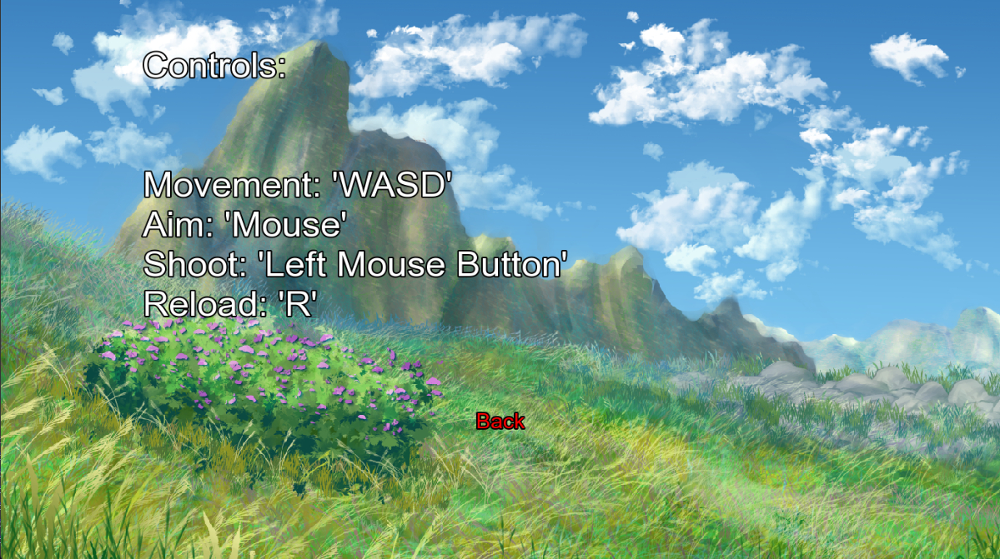
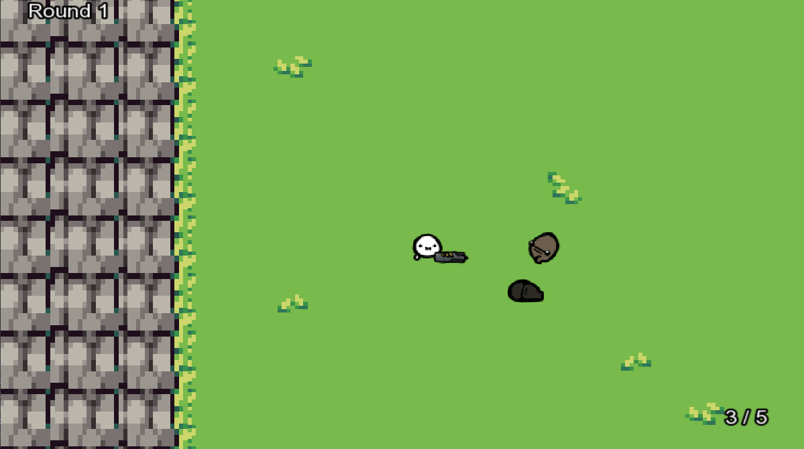
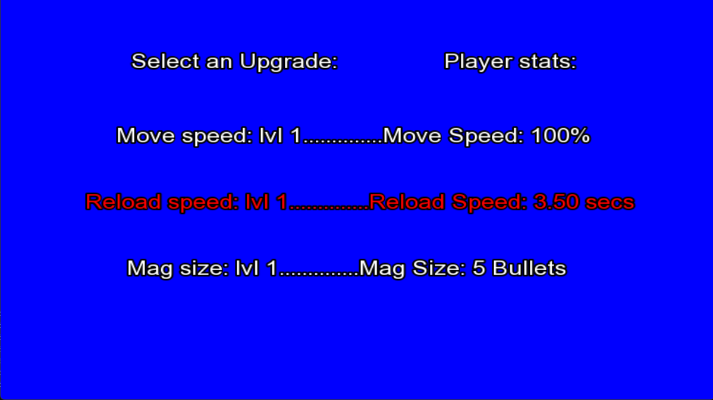